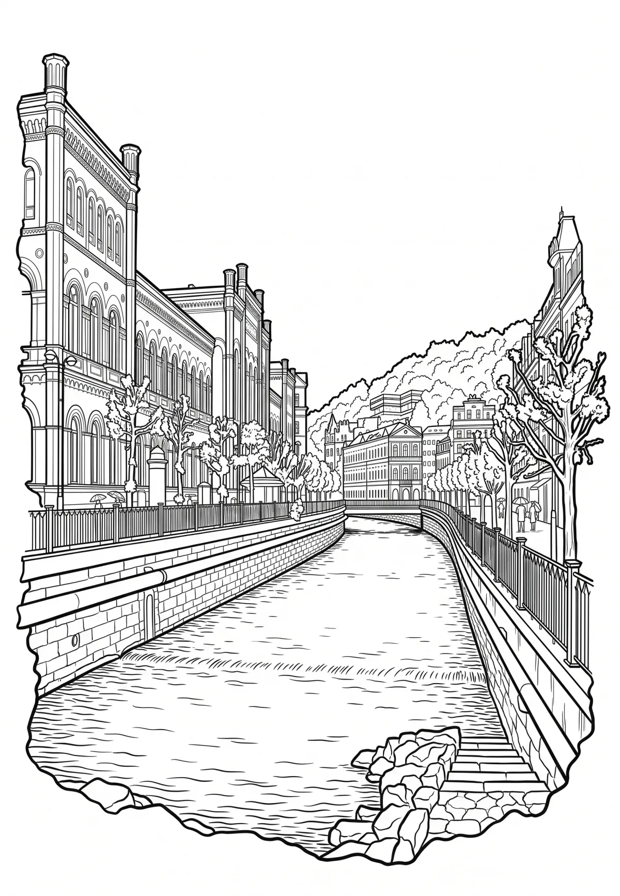

Karlovy Vary
Karlovarský kraj · 380 m n. m.

město · #032
Karlovy Vary (německy Karlsbad) jsou krajské, statutární a lázeňské město v okrese Karlovy Vary v západních Čechách, v Karlovarském kraji, 110 km západně od Prahy na soutoku Ohře a Teplé. Žije zde přibližně 49 tisíc obyvatel. Je zde rozvinut mj. sklářský a potravinářský průmysl.